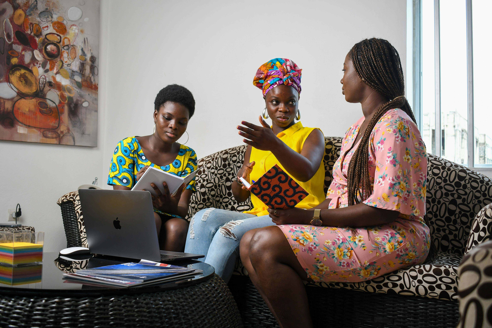

Eight programme areas. One woman at the centre of each.
From preventive healthcare to digital skills to menstrual dignity, every initiative is designed to be practical, local, and built for the Nigerian woman's real life.
Care that reaches women before crisis does.
Preventive healthcare, mental and emotional wellbeing, MHPSS, GBV awareness, gender health rights, nutrition, healthy living and community wellness.
ONM Wellness Centre, Female Alive Campaign, Wellness Chronicles
Turning a phone into a livelihood.
Digital literacy, AI, digital marketing, social media, personal branding, online business, digital safety, career development and digital productivity.
ONM Digital Empowerment & Education Programme
Building the boss, not just the business.
Entrepreneurship, financial literacy, business development, wealth building, business visibility, career growth and personal development.
BossLady Business & Finance Bootcamp
Confidence is a skill. We teach it.
Leadership, mentorship, confidence building, public speaking, career development, civic participation and capacity building.
NextGen Women Leaders Programme
A girl in school is a community strengthened.
Girls' education, school outreach, mentorship, digital education, scholarships and educational resources.
Send A Girl Back To School
Dignity should never depend on access.
Menstrual health education, hygiene, period dignity, school outreach, community awareness, product access and advocacy.
ThrivePad and the Period Dignity Project
RIA Magazine Africa
A women's storytelling, lifestyle, advocacy and empowerment platform covering health, wellness, leadership, entrepreneurship and social issues.
Read RIA MagazineOur flagship platform: conference, community, podcast and more.
The Resilient Woman Conference, The Resilient Woman Community, The Resilient Woman Podcast, and Wellness Chronicles all live under one platform, built for the woman becoming healthier, more financially confident, emotionally whole and purpose driven.
Explore The Resilient Woman